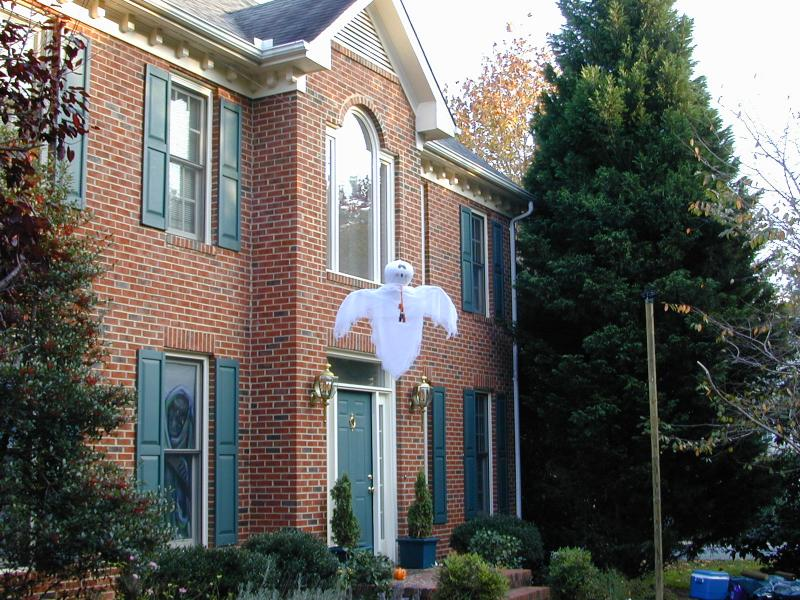
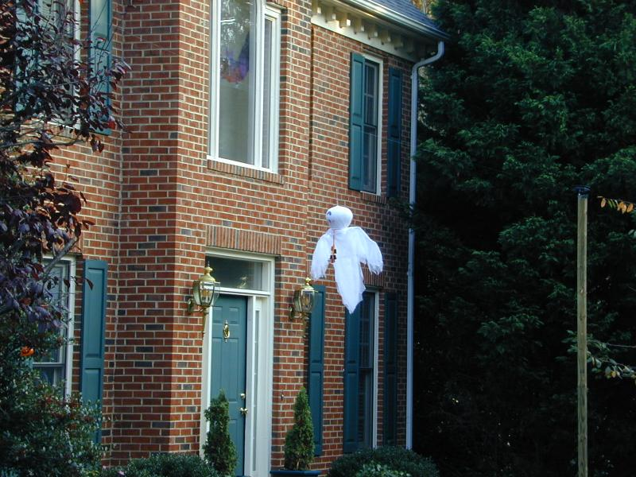
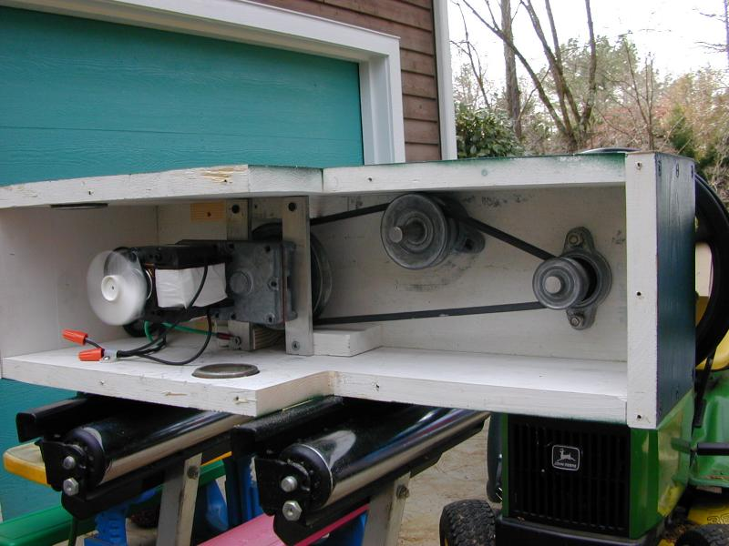
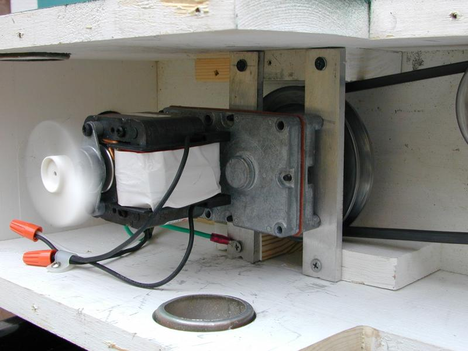
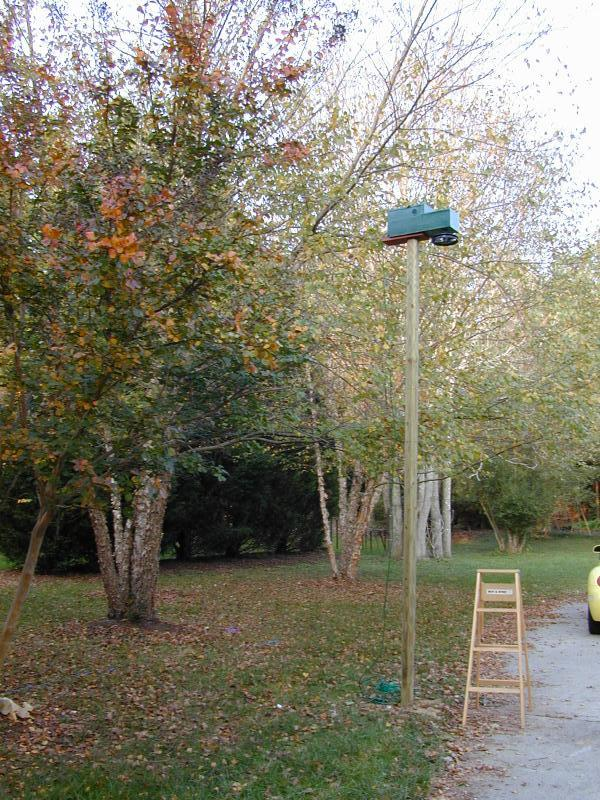
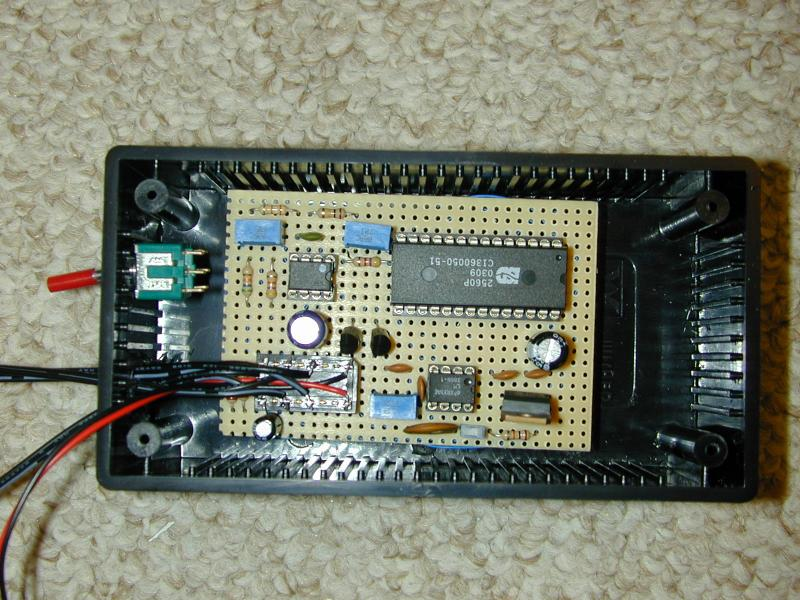
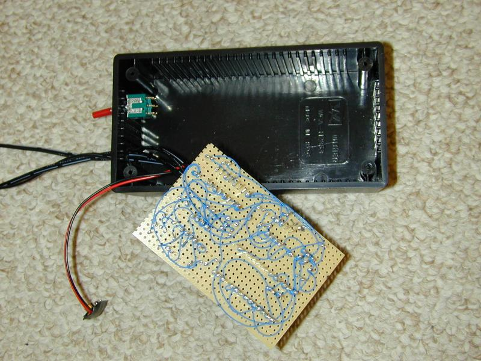

These ghosts are similar to (and inspired by) the traditional Axworthy Flying Ghosts. Key differences:


The drive mechanism is a geared motor mounted on one of the poles.



The ghosts contain circuitry for pulsating orange LED eyes, pulsating blue LEDs in the body, and a voice chip.

